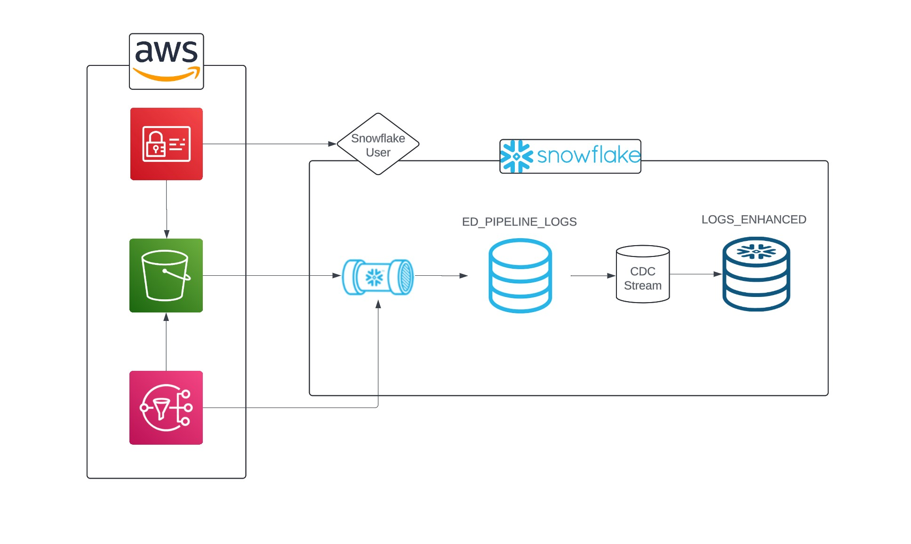

Snowflake Pipelines (Part 2)
contents

In part 1 we figured out how to create a stage using an s3 bucket, load the data in using the correct file format, perform some basic transformations using the snowflake marketplace, and finally locked down our table.
Next we'll figure out to create an automated, semi event-driven pipeline with just a few extra lines of code.
Firstly, in order for our pipeline to be event driven, we need a way to notify snowflake when new data arrives. That's where the SNS topic comes in. The bucket we'll be using already has an SNS topic setup for us, but if you'd like to use your own bucket then follow the steps below, otherwise skip ahead to the automation stage.
Creating an SNS Topic
First, login to your AWS console, navigate to SNS and begin creating a new topic. Select standard topic, name the topic (you can give it a matching display name for simplicity), and then create it.
Next, copy the ARN and head over to snowflake. Enter the following:
select system$get_aws_sns_iam_policy('your-sns-arn');
It should return a json policy similar to below:
{"Version":"2012-10-17",
"Statement":[
{"Sid":"1",
"Effect":"Allow",
"Principal":{
"AWS":"arn:aws:iam::637423551209:user/stuff" //Copy
},
"Action":["sns:Subscribe"],
"Resource":["arn:aws:sns:ap-southeast-2:numbersbeepboop:test-sns-topic"]
}
]
}
Copy the IAM ARN and navigate back to your SNS topic. Select 'access policy' and hit edit. It should look like the following:
{
"Version": "2008-10-17",
"Id": "__default_policy_ID",
"Statement": [
{
"Sid": "__default_statement_ID",
"Effect": "Allow",
"Principal": {
"AWS": "*"
},
"Action": [
"SNS:Publish",
"SNS:RemovePermission",
"SNS:SetTopicAttributes",
"SNS:DeleteTopic",
"SNS:ListSubscriptionsByTopic",
"SNS:GetTopicAttributes",
"SNS:AddPermission",
"SNS:Subscribe"
],
"Resource": "", //copy
"Condition": {
"StringEquals": {
"AWS:SourceOwner": "" //copy
}
}
}
]
}
//paste IAM ARN here
//Paste SNS ARN here
//Paste account ID here
I won't dive too deep into the details (yet), but in simple terms we need to give permissions to your snowflake account, as well as permissions for your sns topic and s3 bucket to interact with one another. The original policy contains both your SNS ARN and your account id. First, paste the IAM ARN you copied from snowflake below the policy, followed by the SNS ARN and account id. Once that's sorted, replace your current policy with the policy below (without deleting the ID/ARNs we pasted).
{
"Version": "2008-10-17",
"Id": "__default_policy_ID",
"Statement": [
{
"Sid": "__default_statement_ID",
"Effect": "Allow",
"Principal": {
"AWS": "*"
},
"Action": [
"SNS:GetTopicAttributes",
"SNS:SetTopicAttributes",
"SNS:AddPermission",
"SNS:RemovePermission",
"SNS:DeleteTopic",
"SNS:Subscribe",
"SNS:ListSubscriptionsByTopic",
"SNS:Publish",
"SNS:Receive"
],
"Resource": "", //SNS ARN
"Condition": {
"StringEquals": {
"AWS:SourceOwner": "" //Account ID
}
}
},
{
"Sid": "1",
"Effect": "Allow",
"Principal": {
"AWS": "" //IAM ARN
},
"Action": "sns:Subscribe",
"Resource": "" //SNS ARN
},
{
"Sid": "s3-event-notifier",
"Effect": "Allow",
"Principal": {
"Service": "s3.amazonaws.com"
},
"Action": "SNS:Publish",
"Resource": "", //SNS ARN
"Condition": {
"ArnLike": {
"aws:SourceArn": "" //s3 Bucket ARN
}
}
}
]
}
add your SNS ARN, account ID, and IAM ARN back the correct locations. At this point you'll need to fetch your s3 bucket ARN too. Once you've completed the above, save the new policy.
If you're unfamiliar with AWS policies, we'll break down what's going on:
- Sid (statement ID): An optional identifier provided for a policy statement. You can assign a Sid value to each statement. Just think of it as a way to identify each statement with a name.
- Effect: Self explanatory, allows or denies the 'principal' access to a resource.
- Principal: The 'who' or 'what' in the context of accessing a resource e.g. a person or service such as an EC2 instance.
- Action: Simply the action taking place.
- Resource: the object or objects the statement covers. In our case, the SNS topic.
- Condition: lets you specify conditions for when a policy is in effect, or is allowed to take effect. In our case, s3 is allowed to publish our SNS topic on the condition that the s3 bucket ARN matches a specific value.
Lastly, head over to your bucket, select properties, scroll down to event notifications and hit 'create event notification'. In the object creation section of event types, select the 'put' option. Scroll down to the destination options, select SNS and choose the topic you created. Save your topic and take a deep breath. Its finally over. The sns topic is born.
Automation Part 1: Snowpipe
We created the underlying structure of our pipeline in part one. Now it's time to automate it. Before we start, we'll merge a couple of steps into one.
Earlier on we created the table PL_GAME_LOGS and our view PL_LOGS using the following code:
-- Gets the files into the table
COPY INTO PL_GAME_LOGS
FROM @uni_kishore_pipeline
file_format = (format_name = ff_json_logs);
-- Creates a view of the table
CREATE OR REPLACE VIEW PL_LOGS as (
select
RAW_LOG:agent::text as AGENT,
RAW_LOG:user_event::text as USER_EVENT,
RAW_LOG:user_login::text as USER_LOGIN,
RAW_LOG:datetime_iso8601::TIMESTAMP_NTZ as datetime_iso8601,
FROM PL_GAME_LOGS
);
These steps can be done together using CTAS. In addition, we can add metadata such as the file name, row number and time of ingestion. We'll start by creating the new table format.
CREATE TABLE ed_pipeline_logs as (
SELECT
METADATA$FILENAME as log_file_name --new metadata column
, METADATA$FILE_ROW_NUMBER as log_file_row_id --new metadata column
, current_timestamp(0) as load_ltz --new local time of load
, get($1,'datetime_iso8601')::timestamp_ntz as DATETIME_ISO8601
, get($1,'user_event')::text as USER_EVENT
, get($1,'user_login')::text as USER_LOGIN
, get($1,'ip_address')::text as IP_ADDRESS
FROM @RAW.UNI_KISHORE_PIPELINE
(file_format => 'ff_json_logs')
);
Now all we need to do is automate the process whenever a new file arrives. This is done using a snowpipe with the sns topic. Note: at this point it may be necessary to provide your snowflake role with permission to execute tasks (and managed tasks).
grant execute task on account to role YOUR_ROLE;
grant execute managed task on account to role YOUR_ROLE;
CREATE OR REPLACE PIPE PIPE_GET_NEW_FILES
auto_ingest=true
aws_sns_topic='arn:aws:sns:us-west-2:321463406630:dngw_topic'
AS
COPY INTO ED_PIPELINE_LOGS
FROM (
SELECT
METADATA$FILENAME as log_file_name
, METADATA$FILE_ROW_NUMBER as log_file_row_id
, current_timestamp(0) as load_ltz
, get($1,'datetime_iso8601')::timestamp_ntz as DATETIME_ISO8601
, get($1,'user_event')::text as USER_EVENT
, get($1,'user_login')::text as USER_LOGIN
, get($1,'ip_address')::text as IP_ADDRESS
FROM @RAW.UNI_KISHORE_PIPELINE
)
file_format = (format_name = ff_json_logs);
Whenever a new file is sent to the s3 bucket our pipeline will automatically copy it into ed_pipeline_logs.
Automation Part 2: Tasks
Next, we need a way to get new data into LOGS_ENHANCED without simply creating a table and without creating duplicates. One way of doing this is an insert merge for rows that are new (not matched).
MERGE INTO ENHANCED.LOGS_ENHANCED e
USING (
SELECT logs.ip_address
, logs.user_login as GAMER_NAME
, logs.user_event as GAME_EVENT_NAME
, logs.datetime_iso8601 as GAME_EVENT_UTC
, city
, region
, country
, timezone as GAMER_LTZ_NAME
, CONVERT_TIMEZONE('UTC', timezone, logs.datetime_iso8601) as GAME_EVENT_LTZ
, DAYNAME(GAME_EVENT_LTZ) as DOW_NAME
, TOD_NAME
from RAW.ED_PIPELINE_LOGS logs -- change to ed_pipeline_logs
JOIN IPINFO_GEOLOC.demo.location loc
ON IPINFO_GEOLOC.public.TO_JOIN_KEY(logs.ip_address) = loc.join_key
AND IPINFO_GEOLOC.public.TO_INT(logs.ip_address)
BETWEEN start_ip_int AND end_ip_int
JOIN AGS_GAME_AUDIENCE.RAW.TIME_OF_DAY_LU lu
ON HOUR(GAME_EVENT_LTZ) = lu.hour
) r
ON r.GAMER_NAME = e.gamer_name
and r.GAME_EVENT_UTC = e.game_event_utc
and r.GAME_EVENT_NAME = e.game_event_name
WHEN NOT MATCHED THEN
INSERT
(IP_ADDRESS,
GAMER_NAME,
GAME_EVENT_NAME,
GAME_EVENT_UTC,
CITY,
REGION,
COUNTRY,
GAMER_LTZ_NAME,
GAME_EVENT_LTZ,
DOW_NAME,
TOD_NAME)
VALUES (
IP_ADDRESS,
GAMER_NAME,
GAME_EVENT_NAME,
GAME_EVENT_UTC,
CITY,
REGION,
COUNTRY,
GAMER_LTZ_NAME,
GAME_EVENT_LTZ,
DOW_NAME,
TOD_NAME);
This adds any records from PL_LOGS into LOGS_ENHANCED which don't already exist.
Next, we'll create our merge as a task, which will automatically run every 5 minutes
CREATE OR REPLACE TASK LOAD_LOGS_ENHANCED
USER_TASK_MANAGED_INITIAL_WAREHOUSE_SIZE='XSMALL'
schedule = '5 minute'
as
MERGE INTO AGS_GAME_AUDIENCE.ENHANCED.LOGS_ENHANCED e
USING .... -- rest of code cut out
After executing both tasks, new data added to the s3 bucket is automatically added to the ED_PIPELINE_LOGS table, and then added to the LOGS_ENHANCED table after being transformed.
One last Improvement (CDC)
While our pipeline works without any problems, we can improve it using CDC (change data capture). In short, CDC allows you to determine and track changes in data, such as new data being added to the ED_PIPELINE_LOGS table. This is a basic example of CDC; it can become extremely complex. We'll use the information from CDC to run our insert merge only on the newly added data, saving compute resources. To do this we simply apply the CDC stream to the ED_PIPELINE_LOGS table.
create or replace stream ags_game_audience.raw.ed_cdc_stream
on table AGS_GAME_AUDIENCE.RAW.ED_PIPELINE_LOGS;
we'll also need to alter our insertion merge query, as it'll be pulling data from ED_CDC_STREAM rather than ED_PIPELINE_LOGS. In addition, we'll add a when clause preventing the merge from executing unless new data is present, saving even more compute resources.
CREATE OR REPLACE TASK CDC_LOAD_LOGS_ENHANCED -- new task name
USER_TASK_MANAGED_INITIAL_WAREHOUSE_SIZE='XSMALL'
schedule = '5 minute'
WHEN system$stream_has_data('ed_cdc_stream') -- when clause
as
MERGE INTO ENHANCED.LOGS_ENHANCED e
USING (
SELECT logs.ip_address
, cdc.user_login as GAMER_NAME -- change alias to cdc from logs
, cdc.user_event as GAME_EVENT_NAME -- change alias to cdc from logs
, cdc.datetime_iso8601 as GAME_EVENT_UTC -- change alias to cdc from logs
, city
, region
, country
, timezone as GAMER_LTZ_NAME
, CONVERT_TIMEZONE('UTC', timezone, logs.datetime_iso8601) as GAME_EVENT_LTZ
, DAYNAME(GAME_EVENT_LTZ) as DOW_NAME
, TOD_NAME
from RAW.ED_CDC_STREAM cdc -- change to ED_CDC_STREAM
JOIN IPINFO_GEOLOC.demo.location loc
ON IPINFO_GEOLOC.public.TO_JOIN_KEY(logs.ip_address) = loc.join_key
AND IPINFO_GEOLOC.public.TO_INT(logs.ip_address)
BETWEEN start_ip_int AND end_ip_int
JOIN AGS_GAME_AUDIENCE.RAW.TIME_OF_DAY_LU lu
ON HOUR(GAME_EVENT_LTZ) = lu.hour
) r
ON r.GAMER_NAME = e.gamer_name
and r.GAME_EVENT_UTC = e.game_event_utc
and r.GAME_EVENT_NAME = e.game_event_name
WHEN NOT MATCHED THEN
INSERT
-- rest of query...
Finally we have a fully functioning ELT pipeline that's mostly (though not entirely) event driven. The same logic shown here can be extended to files of many formats, across multiple cloud providers.
If you've finished this guide and would like something more challenging then consider trying the end to end data product project!